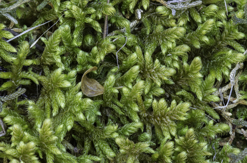

Rhytidiaceae
Wrinkle-leaved Moss Family / Rough-necked Moss
The Rhytidiaceae is a monotypic family containing the single species Rhytidium rugosum. This large, robust pleurocarpous moss is highly distinctive due to its leaves being both strongly rugose (transversely wrinkled) and falcate-secund (curved to one side). It typically grows in dry, calcareous grasslands and open rocky slopes in the Northern Hemisphere.
Overview
Rhytidiaceae is a family within the order Hypnales, notable for containing only one species, Rhytidium rugosum. This species is easily recognized by its large size and the unique texture and arrangement of its leaves – they are simultaneously strongly wrinkled across their surface (rugose) and curved in the same direction like a sickle (falcate-secund).
Rhytidium rugosum typically forms coarse, sprawling mats, often yellowish-green to golden-brown, in open, relatively dry, and base-rich habitats. It is characteristic of calcareous grasslands, dry rocky slopes (especially limestone), sand dunes, and arctic or alpine tundra across the temperate, boreal, and arctic zones of the Northern Hemisphere. Its distinctive appearance and specific habitat preference make it a well-known indicator species in these environments. Sporophytes are known but are very rarely produced throughout most of its range.
Quick Facts
- Scientific Name: Rhytidiaceae Broth.
- Common Name: Wrinkle-leaved Moss Family, Rough-necked Moss
- Number of Genera: 1 (Rhytidium)
- Number of Species: 1 (Rhytidium rugosum)
- Distribution: Widespread in Northern Hemisphere temperate, boreal, arctic, and alpine regions; rare southward in mountains.
- Evolutionary Group: Bryophytes - Mosses (Class: Bryopsida, Order: Hypnales)
Key Characteristics
Growth Form and Habit
Plants are pleurocarpous, large, and robust, forming coarse, loose mats or wefts. Stems are stout, stiff, creeping or ascending, typically reddish-brown, and irregularly to subpinnately branched. Shoots often appear thick and somewhat tumid (swollen).
Leaves
Leaves are crowded, strongly falcate-secund (curved to one side), broadly ovate-lanceolate, gradually tapering to a long, narrow acumen (point). Margins are typically recurved below and sharply serrated above. The most distinctive feature is that the leaf surface is strongly transversely undulate or wrinkled (rugose), especially noticeable when dry, but usually apparent even when moist. Leaves may also show some longitudinal pleating (plicate). The costa (midrib) is single, relatively strong, but ends well below the apex (typically about 2/3 up the leaf). Leaf cells are mostly linear and smooth, or slightly prorate (cell ends projecting). The alar cells form a small, indistinct group at the basal corners, typically quadrate to short-rectangular and sometimes slightly thicker-walled, but not large or inflated.
Sporophyte (Capsule)
Sporophytes are very rarely produced in most areas. When present, they arise laterally from the stems. The seta (stalk) is long, stout, and reddish. The capsule is inclined to horizontal, curved (arcuate), and cylindrical. The operculum (lid) is conical. The peristome is double and well-developed, of the typical Hypnoid type, with 16 yellowish-brown exostome teeth and a well-developed endostome with segments and cilia.
Habitat
Characteristically found in open, relatively dry, base-rich or calcareous habitats. It is common in calcareous grasslands (chalk or limestone grasslands), dry grassy slopes, open rocky slopes (especially on limestone), stable sand dunes, and arctic or alpine heath and tundra. It avoids deep shade and highly acidic, waterlogged conditions.
Field Identification
Rhytidium rugosum is highly distinctive and usually easy to identify:
Primary Identification Features
- Strongly Rugose Leaves: The transversely wrinkled/undulate leaf surface is the most diagnostic feature.
- Strongly Falcate-Secund Leaves: Leaves are clearly sickle-shaped and curved to one side.
- Large, Robust Pleurocarp: Forms coarse, often yellowish or brownish mats.
- Habitat: Characteristic of dry, calcareous grasslands, rocky slopes, or tundra.
Secondary Identification Features
- Irregular to Subpinnate Branching: Stiff stems and branches.
- Single Costa Ending Below Apex: Midrib does not reach the tip.
- Linear Leaf Cells: Cells are elongated (requires magnification).
- Sporophytes Very Rare: Usually found as sterile mats.
Seasonal Identification Tips
- Year-Round Gametophytes: The robust, rugose plants are easily visible year-round. The wrinkled texture is often more pronounced when dry.
- Sporophytes: Extremely rare; finding them is noteworthy.
Common Confusion Points
- Hylocomiaceae (esp. Rhytidiadelphus): Some species like Rhytidiadelphus squarrosus or R. triquetrus are also large pleurocarps found in grasslands or open habitats. However, their leaves are typically squarrose (spreading at right angles) or plicate (longitudinally pleated), not strongly rugose (transversely wrinkled) and not strongly falcate-secund.
- Hypnum species (Hypnaceae): Can be strongly falcate-secund and grow in similar habitats (H. cupressiforme var. lacunosum on calcareous ground), but their leaves are smooth or only slightly plicate, lacking the strong rugose texture of Rhytidium.
- Other Large Pleurocarps: While other robust pleurocarps exist (e.g., Pleurozium schreberi, some Brachytheciaceae), none combine the strong falcate-secund leaf orientation with the pronounced transverse rugosity seen in Rhytidium.
Field Guide Quick Reference
Look For:
- Large, robust pleurocarpous mats
- Leaves both strongly rugose (wrinkled) AND strongly falcate-secund
- Color often yellowish-green to golden-brown
- Habitat: Dry calcareous grassland, rocky slopes, tundra
Key Variations:
- Monotypic family: Rhytidium rugosum
- Costa single, ending below apex
- Sporophytes very rare
Notable Examples
The family contains only a single, distinctive species.

Rhytidium rugosum
Wrinkle-leaved Moss / Rough-necked Moss
The sole species in the family, easily recognized by its large size and coarse texture. It forms extensive yellowish-green to brownish mats in open, dry, calcareous habitats across the Northern Hemisphere. The leaves are diagnostic, being both strongly curved to one side (falcate-secund) and prominently wrinkled transversely (rugose). Despite its wide distribution, sporophytes are very infrequently produced.
Phylogeny and Classification
Rhytidiaceae is placed within the order Hypnales, the largest order of pleurocarpous mosses. Its exact phylogenetic position within the order has been somewhat debated, but it is often considered to have affinities with the Hylocomiaceae due to similarities in size, branching patterns, and ecological preferences (though Hylocomiaceae typically prefer more mesic or acidic sites).
The combination of strongly rugose and falcate-secund leaves makes Rhytidium morphologically distinct. Molecular studies generally support its placement within Hypnales, possibly as a distinct lineage or related to the Hylocomiaceae or certain groups sometimes included in Hypnaceae or Brachytheciaceae complexes. It represents an adaptation within the Hypnales to drier, more open, base-rich environments.
Position in Plant Phylogeny
- Kingdom: Plantae
- Division: Bryophyta (Mosses)
- Class: Bryopsida
- Order: Hypnales
- Family: Rhytidiaceae
Evolutionary Significance
The Rhytidiaceae (and its single species Rhytidium rugosum) is significant for:
- Unique Morphological Combination: The combination of strongly rugose and falcate-secund leaves is highly distinctive within mosses.
- Adaptation to Dry, Calcareous Habitats: Representing a successful lineage within the primarily mesic-adapted Hypnales order that thrives in drier, base-rich environments like grasslands and tundra.
- Indicator Species: Being a reliable indicator of calcareous or base-rich conditions in open habitats across its range.
- Biogeography: Its wide circumboreal/alpine distribution pattern contributes to understanding bryophyte geography in the Northern Hemisphere.